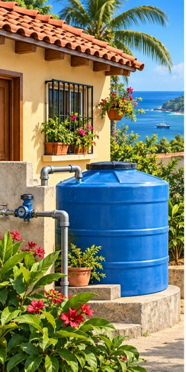
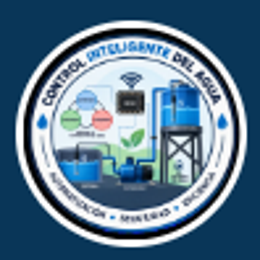
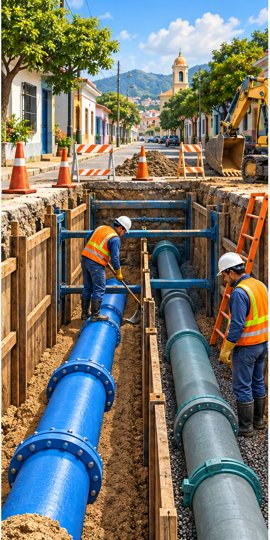
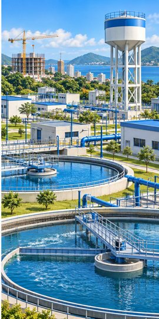

ESCENARIO SIMULADO · AGUA
Viviendas almacenan agua ante horarios variables
El almacenamiento doméstico requiere supervisión para evitar pérdidas.

Automatización de nivel y motobomba mediante FSM
Proyecto integrador de aula · Sistemas Operativos IIEn municipios con suministro intermitente, una alberca almacena agua y una bomba la eleva a un tanque superior. AquaControl demuestra cómo automatizar la operación, evitar reboses y proteger la bomba cuando falta agua.
Noticias ficticias e imágenes ilustrativas para contextualizar el proyecto. No representan hechos ni inversiones verificadas.

El almacenamiento doméstico requiere supervisión para evitar pérdidas.

Las redes públicas y el almacenamiento doméstico son partes complementarias del abastecimiento.

La automatización local puede contribuir a un uso más eficiente del recurso.
FSM hidráulica; no equivale a los estados del planificador de tareas FreeRTOS.
Red pública → Alberca → → Tanque → Vivienda
Conocimiento ampliado sobre agua, ESP32, FreeRTOS, FSM, sensores, pruebas y MQTT. Funciona sin claves ni servicios de IA externos.
AquaBot es un asistente de conocimiento guiado, no una IA generativa. Si no reconoce una pregunta, sugiere temas relacionados.